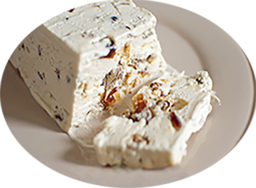

Nougat glacé

Pour 6 personnes
Préparation : 40 mn
Repos : 12 h
Ingrédients
- 3 œufs
- 40 cl de crème liquide très froide
- 80 gr d’amandes décortiquées
- 80 gr de pistaches non salées décortiquées
- 80 gr de noisettes décortiquées
- 100 gr de sucre
- 100 gr de miel
Recette
- Dans une poêle antiadhésive, faites torréfier 2 min les amandes, les noisettes, les pistaches etc...
- Saupoudrez-les de 20 gr de sucre, laisser caraméliser
- Versez le tout sur une plaque tapissé de papier cuisson et laisser refroidir
*************************
- Cassez les œufs, séparez les blancs des jaunes
- Montez les blancs en neige
- Faites chauffer le miel dans une petite casserole jusqu’à ébullition.
- Incorporez les blancs en neige dans le miel très chaud
- Dans une jatte, fouettez les jaunes avec les 80 gr de sucre restants.
- Mélangez délicatement les jaunes d’œufs et les blancs en neige.
- Fouettez la crème liquide jusqu’à ce qu’elle soit bien ferme
- Puis mélangez la délicatement avec la préparation aux œufs
- Pour finir, ajoutez les fruits sec caramélisées et concassés au besoin (ou fruits confits)
- Verser dans un moule, couvrez et placez au congélateur pendant au moins 12 h
- Au moment de servir décorez éventuellement de fruits secs ou de mini meringues
|